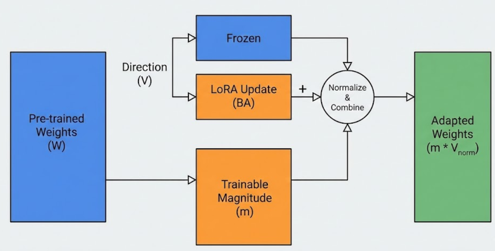

DoRA: Weight Decomposed LoRA

In my previous post, I talked about LoRA and how it reduces trainable parameters by 98%. But LoRA has a theoretical flaw: it forces the model to learn magnitude (how strong a connection is) and direction (where the signal goes) simultaneously using the same limited rank.
In Full Fine-Tuning (FFT), analysis shows that these two properties often move in opposite directions. LoRA, by design, struggles to mimic this negative correlation.
Enter DoRA (Weight-Decomposed Low-Rank Adaptation). Published in 2024, DoRA bridges the gap between LoRA’s efficiency and FFT’s performance by splitting the weight update into two distinct mathematical components.
1. Mathematics
DoRA is based on the idea that every weight matrix \(W \in \mathbb{R}^{d \times k}\) can be mathematically decomposed into:
- Magnitude (\(m\)): A vector determining the scale of each output feature.
- Direction (\(V\)): A normalized matrix determining the orientation.
The Equation
We re-parameterize the weight matrix \(W\) as:
\[W = m \odot \frac{V}{||V||_c}\]
Where:
- \(m \in \mathbb{R}^{1 \times k}\) is the magnitude vector.
- \(V \in \mathbb{R}^{d \times k}\) is the directional matrix.
- \(||V||_c\) denotes the column-wise norm of \(V\).
The DoRA Update
In standard LoRA, we add \(BA\) to \(W\). In DoRA, we freeze the original direction \(V_0\), and apply LoRA only to the direction component, while training the magnitude \(m\) separately.
\[W' = m \odot \frac{V_0 + \Delta V}{||V_0 + \Delta V||_c} = m \odot \frac{W_0 + BA}{||W_0 + BA||_c}\]
This looks scary, but it implies a simple intuition: The model can now boost the “volume” of a feature (via \(m\)) without changing its “meaning” (via \(V\)), or vice-versa.
2. Implementation of the DoRALinear Layer
Unlike LoRA, which can be implemented as Base(x) + Adapter(x), DoRA requires us to reconstruct the weight matrix \(W'\) before the forward pass. This is because the normalization \(||W_0 + BA||\) is non-linear.
import torch.nn.functional as F
class DoRALinear(nn.Module):
def __init__(self, base_layer, rank=8, alpha=16):
super().__init__()
self.base_layer = base_layer
self.rank = rank
self.scaling = alpha / rank
# Initialize LoRA components (Directional Update)
self.lora_A = nn.Parameter(torch.randn(rank, base_layer.in_features))
self.lora_B = nn.Parameter(torch.zeros(base_layer.out_features, rank))
# Initialize Magnitude Vector (Scaling)
# Shape: (1, out_features)
self.m = nn.Parameter(torch.zeros(1, base_layer.out_features))
self.reset_parameters()
def reset_parameters(self):
# Standard LoRA init
nn.init.kaiming_uniform_(self.lora_A, a=math.sqrt(5))
nn.init.zeros_(self.lora_B)
# DoRA Specific: Initialize 'm' to match the magnitude of the FROZEN weights
# This ensures Step 0 identity
with torch.no_grad():
w_norm = self.base_layer.weight.norm(dim=1, keepdim=True).t()
self.m.data.copy_(w_norm)
def forward(self, x):
# 1. Calculate the Directional Component (V + deltaV)
# Frozen Weights + LoRA Update
lora_weight = self.lora_B @ self.lora_A
weight_V = self.base_layer.weight + (lora_weight * self.scaling)
# 2. Normalize the Direction
norm_V = weight_V.norm(dim=1, keepdim=True)
direction = weight_V / (norm_V + 1e-6)
# 3. Apply Magnitude Scaling (m * Direction)
new_weight = self.m.t() * direction
# 4. Standard Linear Forward Pass with new weights
return F.linear(x, new_weight, self.base_layer.bias)Key Engineering Detail: The Overhead
Notice that we perform a norm() operation inside the forward pass.
- LoRA: Matrix multiplication (cheap).
- DoRA: Matrix multiplication + Column-wise Normalization (slightly more expensive).
- Impact: DoRA uses slightly more VRAM during training to store the normalization graph, but inference speed is identical because we can merge the weights back into a standard linear layer after training.
3. Parameter Analysis: DoRA vs. LoRA
A common misconception is that DoRA is “heavier” than LoRA. Let’s do the math on a single Attention Layer from DistilGPT2 to see exactly what we are paying for.
Layer Dimensions: \(768 \times 2304\) (\(d=768, k=2304\)) Rank (\(r\)): 8
LoRA Parameter Count
\[Params_{LoRA} = A_{size} + B_{size}\] \[Params_{LoRA} = (8 \times 768) + (2304 \times 8) = 6,144 + 18,432 = \mathbf{24,576}\]
DoRA Parameter Count
DoRA adds exactly one trainable parameter per output feature: the Magnitude Vector (\(m\)). \[Params_{DoRA} = Params_{LoRA} + k\] \[Params_{DoRA} = 24,576 + 2,304 = \mathbf{26,880}\]
The Verdict
- Difference: +2,304 parameters.
- Increase: \(\approx 9.3\%\) relative to LoRA.
- Global Context: In the full model, this increased our total trainable count from ~235k to ~250k. In exchange for this negligible increase, we gain the ability to decouple magnitude and direction updates.
4. Advantages of DoRA vs. LoRA
Why choose one over the other? Based on my A/B testing with the Shakespeare dataset, here is the breakdown.
Advantages of LoRA
- Simplicity: Easier to implement from scratch (just two matrices).
- Stackability: You can easily add multiple LoRA adapters (e.g., “Style” + “Knowledge”) by summing their \(\Delta W\). DoRA’s normalization makes mathematical stacking complex.
- Lower Training VRAM: No normalization overhead during backpropagation.
Advantages of DoRA
- Robustness: In my experiments, DoRA was far less sensitive to the
alphahyperparameter. - Syntax Mastery: While LoRA captured the theme of Shakespeare, DoRA captured the grammar. It correctly used “thou art” vs “he is” more often, likely because it could adjust the magnitude of specific pronoun embeddings without distorting their vector direction.
- Convergence: DoRA typically reaches lower validation loss faster than LoRA at the same rank.
5. Engineering Scars: Why DoRA Broke My Code
When moving from LoRA to DoRA, I hit a specific bug regarding Optimization.
The Initialization Trap
In LoRA, we initialize \(B=0\) so the update starts at 0. In DoRA, if you initialize \(m\) randomly, you destroy the pre-trained weights immediately. The Fix: You must initialize the learnable vector \(m\) to be the column-wise norm of the pre-trained weights. \[m_{init} = ||W_0||_c\] This ensures that at step 0, even with the normalization logic, the output \(W'\) is mathematically identical to \(W_0\).
def reset_parameters(self):
# Initialize Magnitude (m) to be the Column-wise Norm of W0
# Shape of W0 is (Out, In), so we take norm over Dim 1
with torch.no_grad():
# Calculate L2 norm of each output neuron's weight vector
w_norm = self.base_layer.weight.norm(p=2, dim=1, keepdim=True).t()
# Copy this norm to our trainable 'm' parameter
self.m.data.copy_(w_norm)Conclusion
DoRA is arguably the “Pro” version of LoRA. For a cost of ~0.01% more parameters, it provides a training trajectory that mimics full fine-tuning much more closely. While it is slightly harder to implement and optimize, the stability gains for complex tasks—like learning an archaic dialect—are undeniable.
If your GPU can handle the slight VRAM bump, DoRA is almost always the better choice.